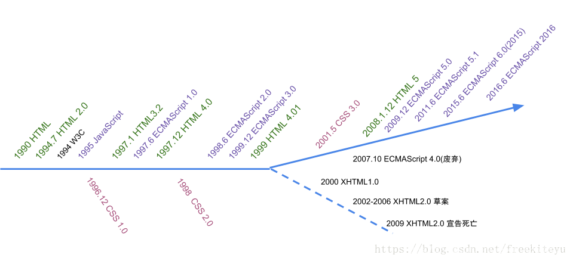
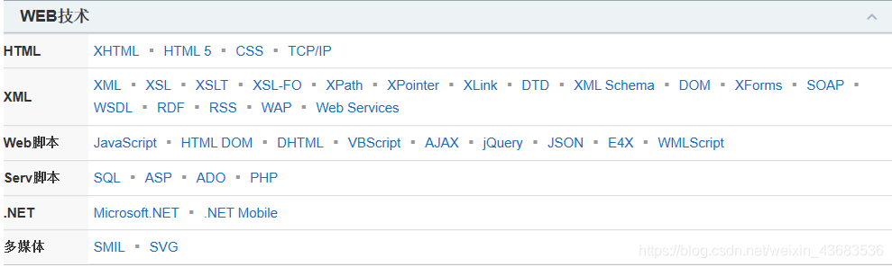

Web前端学习
快速开始
Web前端开发技术综述
Web是一种典型的分布式应用结构。Web应用中的信息交换与传输都要涉及客户端和服务器端。 因此，Web开发技术分为客户端开发技术(又名“Web前端开发技术”)和服务器端开发技术两大类。 Web前端(客户端)的主要任务是信息内容的呈现和用户界面( UserInterface, UI)设计。Web前 端开发技术主要包括HTML、CSS、JavaScript、DOM、BOM、AJAX、jQuery 及其他插件技术。学 习完本章后读者对Web前端开发技术能有一个总体的认识。
Web前端开发工程师应掌握以下内容:
web起源
1989年CERN（欧洲粒子物理研究所）中由Tim Berners-Lee领导的小组提交了一个针对 Internet的新协议和一个使用该协议的文档系统，该小组将这个新系统命名为World Wide Web，它的目的在于使全球的科学家能够利用Internet交流自己的工作文档。 这个新系统被设计为允许Internet上任意一个用户都可以从许多文档服务计算机的数据库中搜索和获取文档。 1990年末，这个新系统的基本框架已经在CERN中的一台计算机中开发出来并实现了,1991年 该系统移植到了其他计算机平台，并正式发布。
web发展
Web 1.0
最早的网络构想来源于 1980 年由 Tim Berners-Lee 构建的ENQUIRE项目，这是一个 超文本在线编辑数据库，尽管看上去与现在使用的互联网不太一样，但是在许多核心思想上 却是一致的。Web 1.0时代开始于1994年，其主要特征是大量使用静态的 HTML 网页来发布 信息，并开始使用浏览器来获取信息，这个时候主要是单向的信息传递。通过Web万维网，互 联网上的资源，可以在一个网页里比较直观地表示出来，而且资源之间，在网页上可以任意链 接。Web1.0的本质是聚合、联合、搜索，其聚合的对象是巨量、无序的网络信息。Web1.0 只 解决了人对信息搜索、聚合的需求，而没有解决人与人之间沟通、互动和参与的需求，所以Web 2.0应运而生。
Web 2.0
Web 2.0 始于 2004 年 3 月 O’Reilly Media 公司和 MediaLive 国际公司的一次头 脑风暴会议。Tim O’Reilly 在发表的“What Is Web2.0”一文中概括了Web2.0的概念，并给 出了描述 Web2.0 的框图——Web2.0 MemeMap，该文成为 Web2.0 研究的经典文章。此后关于 Web2.0 的相关研究与应用迅速发展，Web2.0 的理念与相关技术日益成熟和发展，推动了In ternet的变革与应用的创新。在Web2.0中，软件被当成一种服务，Internet从一系列网站演 化成一个成熟的为最终用户提供网络应用的服务平台，强调用户的参与、在线的网络协作、数 据储存的网络化、社会关系网络、RSS应用以及文件的共享等成为了Web2.0发展的主要支撑和 表现。Web2.0模式大大激发了创造和创新的积极性，使Internet重新变得生机勃勃。Web 2. 0的典型应用包括Blog、Wiki、RSS、Tag、SNS、P2P、IM等。
Web3.0
Web3．0是Intnet发展的必然趋势，是Web2．0的进一步发展和延伸。Web3．0在Web 2．0 的基础上，将杂乱的微内容进行最小单位的继续拆分，同时进行词义标准化、结构化，实现微信 息之间的互动和微内容间基于语义的链接。Web3．0能够进一步深度挖掘信息并使其直接从底层 数据库进行互通。并把散布在Intemet上的各种信息点以及用户的需求点聚合和对接起来，通过 在网页上添加元数据，使机器能够理解网页内容，从而提供基于语义的检索与匹配，使用户的检 索更加个性化、精准化和智能化嘲。对web3．0的定义是网站内的信息可以直接和其他网站相关 信息进行交互，能通过第三方信息平台同时对多家网站的信息进行整合使用；用户在IIl吼net上 拥有直接的数据，并能在不同网站上使用；完全基于Web，用浏览器即可以实现复杂的系统程序才 具有的功能。Web3．0浏览器会把网络当成一个可以满足任何查询需求的大型信息库。Web3．0的 本质是深度参与、生命体验以及体现网民参与的价值。
web 3.0与Web 1.0、Web 2.0的区别
从用户参与的角度来看：Web1.0特征是以静态、单向阅读为主，用户仅是被动参与；Web2.0 则是一种以分享特征的实时网络，用户可以实现互动参与，但这种互动仍然是有限度的；Web3．o 则以网络化和个性化为特征，可以提供更多人工智能服务，用户可以实现实时参与。 从技术角度看：Web1.0依赖的是动态HTML和静态HTML网页技术；Web2．0则以Blog、TAG、SNS、 RSS、Wiki、六度 分隔、XML、AJAX等技术和理论为基础；Web3．0的技术特点是综合性的，语义Web、本体是实现W eb3．0的关键技术。 从应用角度来看：传统的门户网站如新浪、搜狐、网易等是Web1.0的代表；博客中国、校内网、 Facebook、YouTube等是Web2．0的代表；iGoogle、阔地网络等是Web3．0的代表。
前端开发
随着因特网技术飞速发展与普及，Veb技术也在同步发展，并且应用领域越来越宽广。www (Word Wide Web) 已经是这个时代不可或缺的信息传播载体。全球范围内的资源互通互访、 开放共享已经成为www最有实际应用价值的领域。开发具有用户动态交互、富媒体应用的新一 代Web网站需要HTML、CSS、JavaScript、 DOM、AJAX等组合技术，其中HTML、CSS、 Java Script 三大技术称为“Web标准三剑客
HTML
HTML (Hypertext Markup Language)是超文本标记语言。它是一种标记语言，而不是编程语言 。HTML是Web页面的结构。HTML使用标记来描述网页。网页的内容包括标题、副标题、段落、无序列表 、定义列表、表格、表单等。
CSS
由于Netscape 和Microsoft两家公司在自己的浏览器软件中不断地将新的HTML标记 和属性(例如字体标记和颜色属性)添加到HTML规范中，导致创建具有清晰的文档内 容并独立于文档表现层的站点变得越来越困难。为了解决这个问题，Hakon WiumLic (哈 肯.维姆.菜，挪威)和Bert Bos (伯特●波斯，荷兰)于1994 年共同发明了级联样式表。
JavaScript
在HTML基础上，使用JavaScript可以开发交互式Web页面。JavaScript 的出现使得 网页和用户之间实现了一种实时性的、动态的、交互性的关系，使网页包含更多活跃元素和 更加精彩的内容。这也是JavaScript与HTML DOM共同构成Web网页的行为。
HTML基础
超文本标记语言（英语：HyperText Markup Language，简称：HTML）是一种用于创建网页的标准标记语言。
您可以使用 HTML 来建立自己的 WEB 站点，HTML 运行在浏览器上，由浏览器来解析。
在本教程中，您将学习如何使用 HTML 来创建站点。
HTML 很容易学习！相信您能很快学会它！
HTML是SGML ( Standard Generalized Markup Language,标准通用标记语言)下的一个应用(也称
为一个子集)，也是-种标准规范，它通过标记符号来标记要显示的网页中的各个部分。而SGML是一种定
义电子文档结构和描述其内容的国际标准语言，是所有电子文档标记语言的起源。
HTML文档是用来描述网页，由HTML标记和纯文本构成的文本文件。Web浏览器可以读取HTML文档，
并以网页的形式显示出它们。
HTML文档结构
HTML文档由头部head和主体body两个部分组成。头部head标记中可以定义标题样式等，头部信息 不显示在网页上;主体body标记中可以定义段落、标题字、超链接、脚本、表格、表单等元素，主体内 容是网页要显示的信息。
头部head
HTML文档的头部head标记主要包含页面标题标记、元信息标记、样式标记、脚本标记、链接标记等
。头部head标记所包含的信息一般不会显示在网页上。
meta标记用来描述一个HTML网页文档的属性，也称为元信息(meta-information) ，这些信息并不会
显示在浏览器的页面中，例如作者、日期和时间、网页描述、关键词、页面刷新等。meta 标记是单个
标记，位于文档的头部，其属性定义了与文档相关联的“名称/值”对。
主体body
主体body是一个Web页面的主要部分，其设置内容是读者实际看到的网页信息。所有www文档的主体 部分都是由body 标记定义的。在主体body标记中可以放置网页中所有的内容，如图片、图像、表格、 文字、超链接等元素。
实例1：
欢迎来到我们的求知家园实例2：
欢迎使用Google搜索！实例3：
欢度新年元旦格式化文本与段落
标题字
标题字共有六种.基本语法如下
HTML文档结构
HTML文档由头部head和主体body两个部分组成。头部head标记中可以定义标题样式等，头部信息 不显示在网页上;主体body标记中可以定义段落、标题字、超链接、脚本、表格、表单等元素，主体内 容是网页要显示的信息。
HTML文档结构
HTML文档由头部head和主体body两个部分组成。头部head标记中可以定义标题样式等，头部信息 不显示在网页上;主体body标记中可以定义段落、标题字、超链接、脚本、表格、表单等元素，主体内 容是网页要显示的信息。
实例1：
自荐信实例2：
数学方程式实例3：
综合实例HTML5基础与CSS3应用
实例1：
HUAWEI CONNECT 2016大透析实例1：
弈心博客实例1：
HTML5表单form的autocomplete和novalidate属性的应用实例1：
HTML5的input标记新增部分属性的应用1实例1：
HTML5的input标记新增部分属性的应用2实例1：
HTML5的input标记新增部分属性的应用3实例1：
表单新增input类型的应用1实例1：
表单新增input类型的应用2